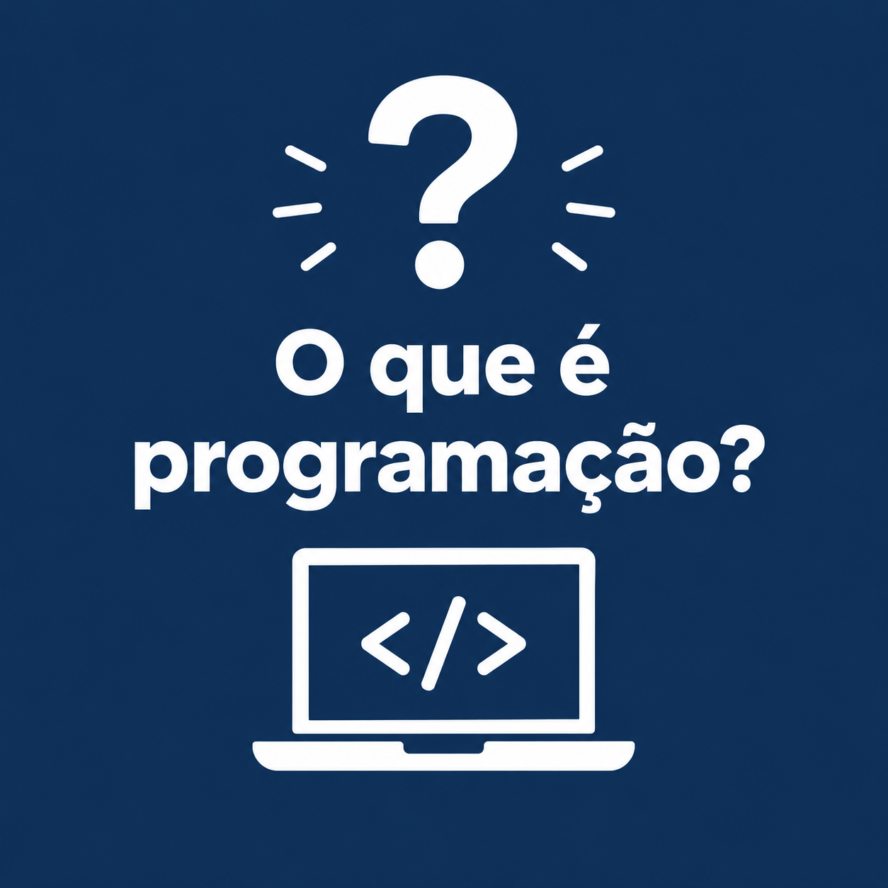
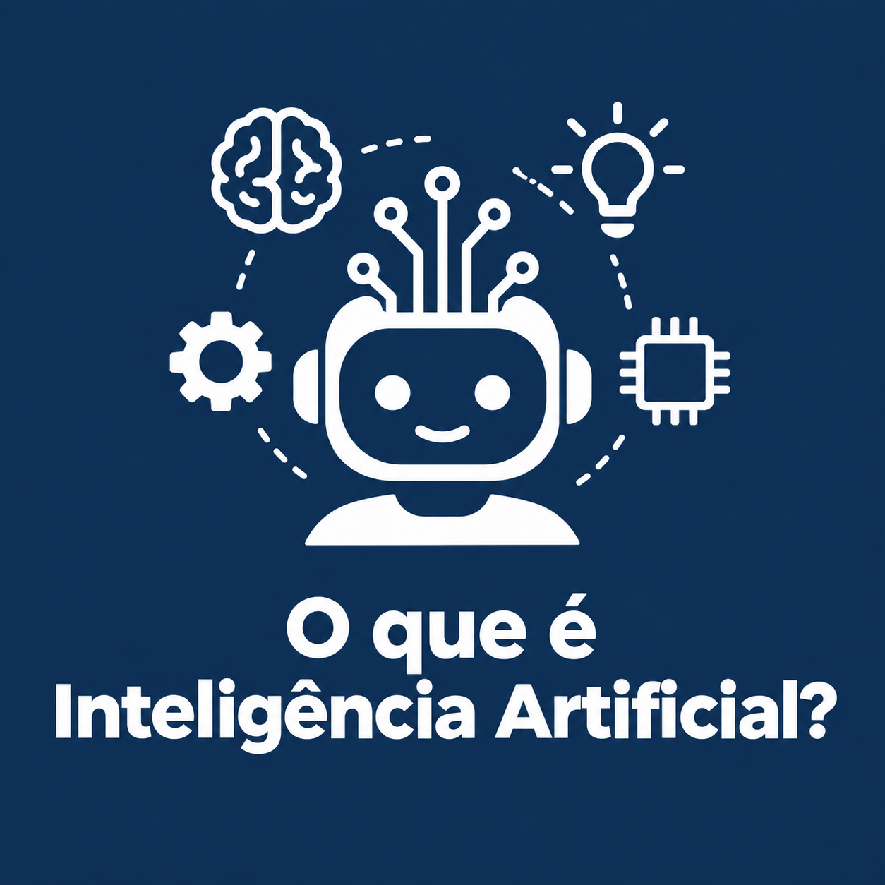
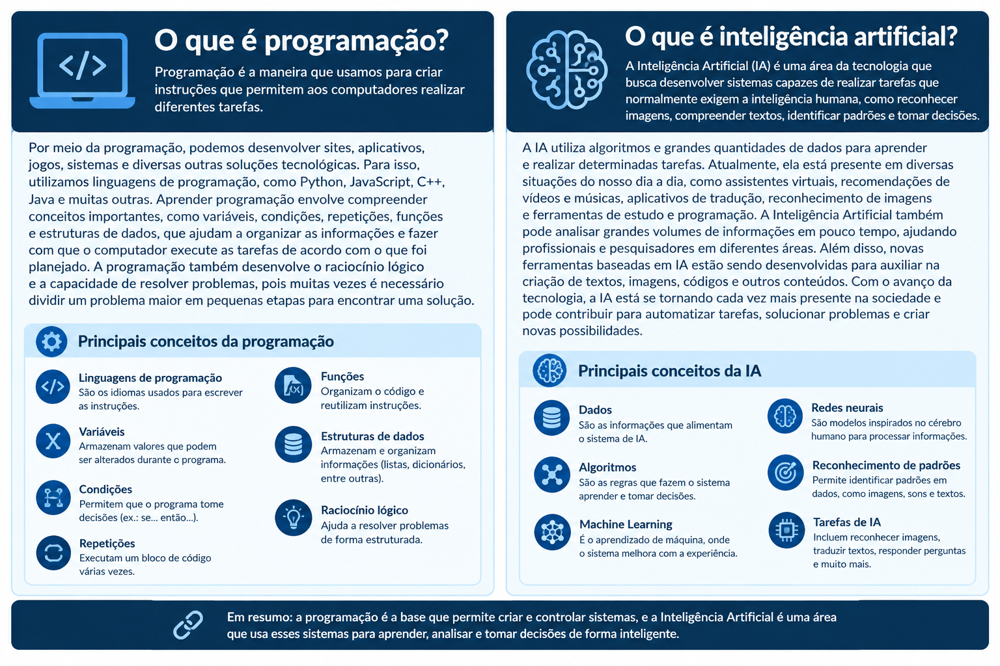

Meu primeiro post
Por: Daniel cavalcante
Boas-Vindas ao meu novo blog! Aqui vou compartilhar dicas de programação e curiosidades da area de tecnologia.
Vou compartilhar conhecimentos sobre tecnologia e programação
© 2026 Meu Blog Tech — Todos os direitos autorais reservados.Por: Daniel cavalcante
Boas-Vindas ao meu novo blog! Aqui vou compartilhar dicas de programação e curiosidades da area de tecnologia.

Por: Daniel cavalcante
Programação é a maneira que usamos para criar instruções que permitem aos computadores realizar diferentes tarefas. Por meio dela, podemos desenvolver sites, aplicativos, jogos, sistemas e diversas outras soluções tecnológicas. Para isso, utilizamos linguagens de programação, como Python, JavaScript, C++, Java e muitas outras. Aprender programação envolve compreender conceitos importantes, como variáveis, condições, repetições, funções e estruturas de dados, que ajudam a organizar as informações e fazer com que o computador execute as tarefas de acordo com o que foi planejado. A programação também desenvolve o raciocínio lógico e a capacidade de resolver problemas, pois muitas vezes é necessário dividir um problema maior em pequenas etapas para encontrar uma solução. Atualmente, a programação está presente em praticamente todos os lugares, desde sites e redes sociais até aplicativos de celular, jogos, sistemas empresariais e tecnologias de inteligência artificial. Por isso, aprender seus conceitos básicos é uma ótima forma de entender melhor como a tecnologia funciona e começar a transformar ideias em projetos reais.

Por: Daniel cavalcante
A Inteligência Artificial (IA) é uma área da tecnologia que busca desenvolver sistemas capazes de realizar tarefas que normalmente exigem a inteligência humana, como reconhecer imagens, compreender textos, identificar padrões, responder perguntas, aprender com informações e auxiliar na tomada de decisões. Para funcionar, a IA utiliza algoritmos e grandes quantidades de dados, permitindo que os sistemas encontrem padrões e realizem determinadas tarefas de maneira cada vez mais eficiente. Atualmente, a Inteligência Artificial está presente em diversas situações do nosso dia a dia, como assistentes virtuais, recomendações de vídeos e músicas, aplicativos de tradução, reconhecimento de imagens, ferramentas de estudo, programação e sistemas utilizados em empresas. A IA também pode ser utilizada para analisar grandes quantidades de informações em pouco tempo, ajudando profissionais e pesquisadores em diferentes áreas. Além disso, novas ferramentas baseadas em IA estão sendo desenvolvidas para auxiliar na criação de textos, imagens, códigos e outros conteúdos. Com o avanço da tecnologia, a Inteligência Artificial está se tornando cada vez mais presente na sociedade e pode contribuir para automatizar tarefas, solucionar problemas e criar novas possibilidades. Por isso, compreender o que é IA e como ela funciona é importante para entender melhor as transformações tecnológicas que estão acontecendo atualmente.
Por: Daniel cavalcante
